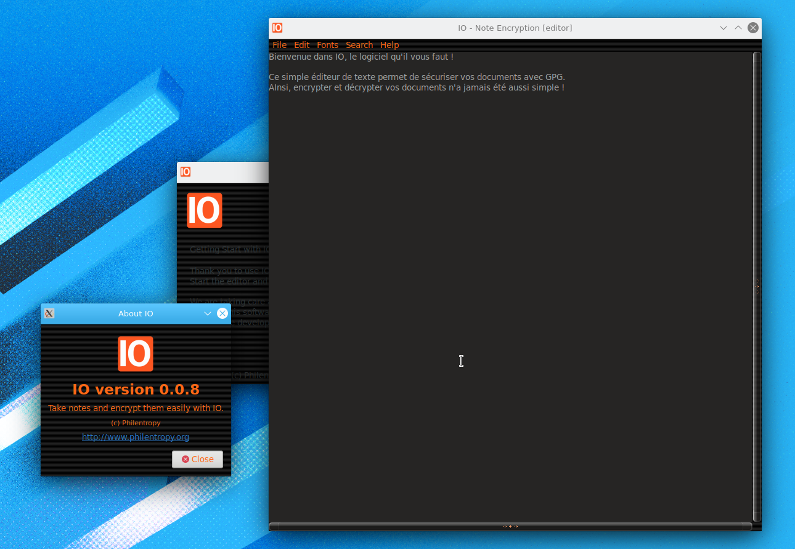
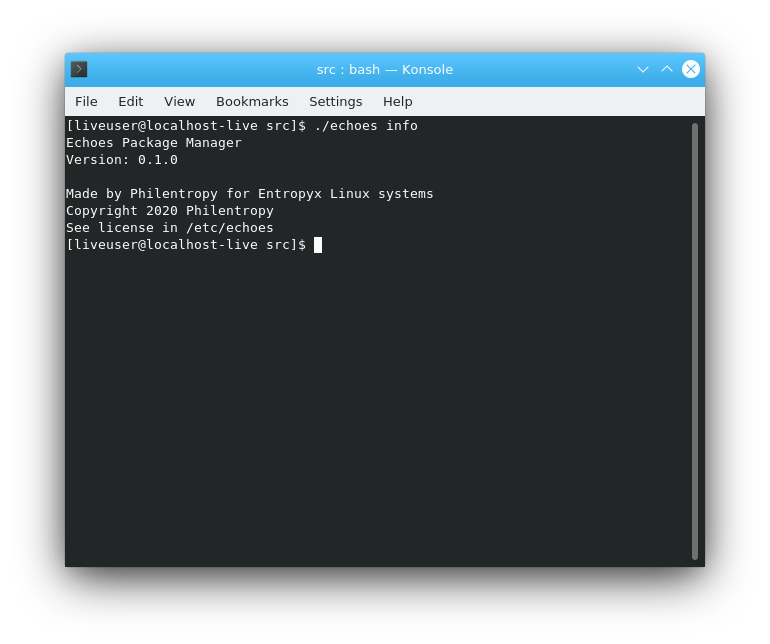
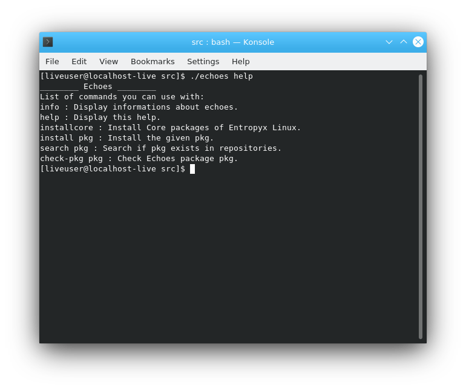

Bienvenue sur la page d'acceuil de mon portfolio
Aperçu de IO, l'éditeur de texte qui chiffre et déchiffre vos notes.
Aperçu de Echoes, le gestionnaire de paquets de la distribution Entropyx Linux.
 Aperçu de LTCS (Linux Terminal Cheat Sheets), un utilitaire au contenu personnalisable qui s'adresse à tous.
Aperçu de NPK (eNtropyx Packager Kit), la boîte à outils du packager Entropyx Linux.